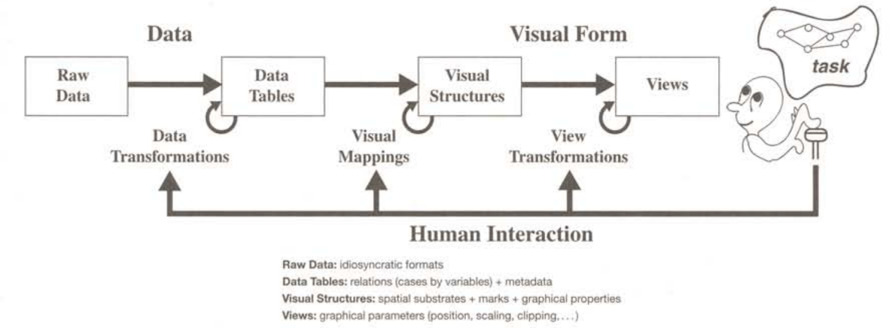

2 Principes théoriques de modélisation des connaissances
« organiser le dialogue avec la Nature
en tissant inlassablement
le filet des énoncés
pour en resserrer la maille »
(Callon, 2013, sec. 37)
« Il y a partout des forces
qui constituent
des micro-cerveaux. »
(Deleuze & Guattari, 2005, p. 200)
Depuis une trentaine d’années, je m’intéresse à la modélisation des données et plus particulièrement à la question de savoir comment cette modélisation est utile pour créer les conditions de l’expérimentation des connaissances. Dès mes travaux en maîtrise d’histoire de l’art (1994), je me suis familiarisé à la création de base de données qui pour moi à cette époque, prenaient la forme d’un simple tableur. Puis en DEA (1995), je me suis familiarisé avec le logicielle Hypercard1 pour transformer mes bases de données en collections de fiches hypertextuelles (Deuff, 2019) et surtout en interfaces dynamiques et interactives. Ce passage du tableur à Hypercard m’a fait comprendre les relations intimes entre les données, leurs représentations et leurs manipulations que (Card, Mackinlay, & Shneiderman, 1999) a bien schématisé :

De plus, au même moment, mes recherches sur John Cage m’ont sensibilisées à deux approches opposées de ces relations entre données, représentations et manipulations. A travers les débats qui ont animées les rencontres entre John Cage et Pierre Boulez (Boulez, 1975), j’ai compris que les approches du hasard pour Boulez et de la chance pour Cage étaient symptomatiques d’un usage opposé des possibilités ouvertes par les ordinateurs pour la manipulations des connaissances.
D’un coté Boulez soutient l’idée de :
« “hasard dirigé” pour parvenir à une complète négation du hasard qu’il nomme “le hasard absorbé” et qui garantit selon lui “la sur puissance du compositeur” »(Cazenave, 2006)
De l’autre coté, Cage utilise les possibilités aléatoires de l’informatique pour se dégager des puissances de son égo et parvenir à :
« trouver une façon d’écrire qui, tout en partant d’idées, ne soit pas un discours sur elles : ou ne soit pas sur des idées mais les produise » (Scott Lee, 1998, p. 307)
Entre ces deux approches, il n’est pas nécessaire de choisir mais plutôt de trouver comment les associées. L’approche de Boulez a montré l’efficacité d’une “sur puissance” pour construire des institutions de recherche comme l’IRCAM ou de diffusion de la musique comme la cité de la Musique. L’approche de Cage quant à elle, continue de questionner nos égos avec par exemple l’oeuvre musicale “As Slow as Possible” qui devrait se terminer en l’année 26402. Ce qui rapproche les deux deux créateurs c’est la volonté de définir un protocole (Sauret, 2020), c’est à dire de définir des règles d’information et de communication dans un processus de création. Ce qui les oppose c’est la place qu’ils donnent à l’ordinateur pour faire des choix dans les étapes du protocoles : Boulez contraint le plus possible les choix de la machine alors que Cage laisse la machine choisir. Ces débats entre c’est deux approches est d’une extrême actualité à l’heure où nous cherchons à concilier les approches des IA symbolique et connexioniste. D’un côté, une intelligence artificielle connexionniste qui utilise l’apprentissage machine pour choisir automatiquement des modèles à partir de très grandes quantités de données. De l’autre, une approche symbolique qui modélise des espaces sémantiques pensés par des humains pour contraindre les choix de la machine. Là où le connexionnisme produit des modèles impensables par les humains car trop complexes, l’approche symbolique organise cet “abîme réflexif” (Ertzscheid, 2023) de manière à le rendre plus compréhensible et pilotable par des humains.
Au cours de nos expériences professionnelles comme ingénieur informatique puis comme chef de projet et architecte de l’information, nous avons pratiqué l’approche “boulézienne” de modélisation des connaissances en utilisant des bases de données relationnelles (Saleh, 1992) et des interfaces de gestion orientée vers un travail bureautique. Dans le monde de l’entreprise, il faut contraindre le plus possible les données et leur manipulation pour optimiser les traitements et réduire le plus possible l’amgbiguité de l’information et de la communication. Cette approche trouve sont aboutissement dans les “systèmes experts” piloté par des ontologies et des IA symboliques. J’ai montré dans ma thèse (Szoniecky, 2012, pp. 61–71) les limites formelles de cette approches de modélisation des connaissances notamment parce que :
« Son efficacité repose principalement sur une vision réductrice et fermée des pratiques cognitives, des situations d’échange transactionnel, des processus réels de travail, des différenciations dans les phénomènes essentiels de recherche, de navigation et d’écriture- lecture. » (Juanals & Noyer, 2010, p. 52)
Ces limites sont contrebalancées par le fait que ces approches possèdent une dimension sociale incontournable à cause :
du consensus nécessaire à leur élaboration,
de leurs adoptions qui lient les individus à la société,
du développement des systèmes symboliques vecteurs de nouvelles sociabilités
Toujours dans notre thèse, nous montrions comment cette dimension sociale de la modélisation des connaissances pouvait être développée dans des processus d’intelligence collective basés sur une écosystèmique de l’information et de la communication. Nous montrerons dans le chapitre suivant comment ces processus s’appuient sur une cartographie des connaissances Chapter 3, mais décrivons maintenant plus en détail les principes théoriques que nous utilisons pour modéliser les écosystèmes des connaissances.
2.1 Principes fondamentaux d’information-communication
A l’inverse du modèle d’architecture de la perception que propose Yan LeCun (LeCun, n.d.), un des “techno-papes” de l’IA connexionniste, dont la représentation visuelle Figure 2.1 symbolise parfaitement la disproportion entre son cerveau est notre planète, nous ne considérons pas la perception uniquement à travers une cervelle dont la transcendance extérieure à son environnement exerce son pouvoir sur un objet. Pour nous, l’information et la communication est un processus qui se déploie dans un écosystème complexe (Bateson, 2008; Lévy, 1990; Maturana & Varela, 1994; Morin, 1995) qui émerge de l’auto-poïèse et de l’auto-organisation, où la moindre particule possède un cerveau et qui constitue une noosphère :
« La sphère noologique, constituée par l’ensemble des phénomènes dits spirituels,est un très riche univers qui comprend idées, théories, philosophies, mythes, fantasmes, rêves. […] Ce ne sont pas des “choses de l’esprit”. Ils sont la vie de l’esprit. Ce sont des êtres d’un type nouveau, des existants informationnels […] ils sont capables de se multiplier en puisant de la néguentropie dans les cerveaux humains, et, à travers eux, dans la culture qui les irrigue ;nos esprits et plus largement nos cultures sont les écosystèmes où ils trouvent,non seulement aliment, mais chance, risque. » (Morin, 1981, p. 340)

A partir de cette approche, nous établissons des principes fondamentaux dont les premiers reprennent ceux de la complexité :
principe dialogique : « L’association complexe (complémentaire/concurrente/antagoniste) d’instances, nécessaires ensemble à l’existence, au fonctionnement et au développement d’un phénomène organisé. » (Morin, 1992, p. 98)
principe récursif : « Un processus où les effets ou produits sont en même temps causateurs et producteurs dans le processus lui-même, et où les états finaux sont nécessaires à la génération des états initiaux. » (Morin, 1992, p. 101)
principe hologrammatique : « Le tout est d’une certaine façon inclus (engrammé) dans la partie qui est incluse dans le tout. L’organisation complexe du tout (holos) nécessite l’inscription (engramme) du tout (hologramme) en chacune de ses parties pourtant singulières ; ainsi, la complexité organisationnelle du tout nécessite la complexité organisationnelle des parties, laquelle nécessite récursivement la complexité organisationnelle du tout. » (Morin, 1992, p. 102)
A ces principes de complexité, nous ajoutons d’autres principes dont le premier sur laquelle nous nous appuyons est celui que les connaissances se produisent suivant un cycle continu d’expériences dans le monde physique et dans le monde de la pensée. Entre les « physicalités » et les « intériorités » (Descola, 2005) , les « cycles de sémioses » (µ, Edeline, & Klinkenberg, 2015) canalisent nos perceptions par « anasémiose » pour discerner des informations que nous communiquons par « catasémiose » en donnant forme à l’agir : parler, lire, écrire, gesticuler, ne rien faire…

Le second principe se base sur les travaux de (Hofstadter & Sander, 2013) pour qui l’analogie est le « moteur » qui relie le discernement et l’action en gardant le souvenir de cette relation qui devient à force de répétition, une manière d’être et selon Deleuze la forme d’un « pli » qui est notre troisième principe :
« L’opération de la perception constitue les plis dans l’âme, les plis dont la monade est tapissée du dedans ; mais ceux-ci ressemblent à une matière, qui doit dès lors s’organiser en replis extérieurs. » (Deleuze, 1988, p. 131)
A la manière de deux miroirs qui plient la lumière en se reflétant l’un dans l’autre à l’infini, discernement et action se réfléchissent en pliant les flux d’information. Chaque pli décompose l’information en signes dont les signifiés plongent vers l’intériorité en stimulant l’intuition et dont les signifiants émergent vers des physicalités en stimulant l’expression.
Entre discerner et agir, intuition et expression, c’est dans ce « milieu » qu’Augustin Berque décrit une « pulsation existentielle » mue par la « raison trajective » que nous prenons comme quatrième principe :
« la raison trajective, elle est en effet dans la pulsation existentielle qui, par la technique, déploie notre corps en monde sur la terre, et qui simultanément, par le symbole, reploie le monde en notre chair » (Berque, 2009, p. 402)
Cette raison pilote la réflexion en modifiant l’inclinaison du pli vers le discernement de signifiés ou vers l’expression de signifiants. Elle procède de processus que nous contrôlons consciemment et d’autres plus imprévisibles et incontrôlables qui se produisent en fonction d’une multitudes de pliages et de leurs capacités à ce faire, ce défaire, ce bloquer suivant un cinquième principe celui du degrés de flexibilité (Clément, 2021).
Les cycles de sémioses, les analogies, les plis, les pulsations existentielles, les degrés de flexibilité structurent et produisent nos connaissances tout au long de nos vies en développant trois pouvoirs fondamentaux : discerner, raisonner, agir. Notre hypothèse principale est qu’il est possible de cartographier ces connaissances en représentant les pliages et leurs dynamismes dans trois directions : vers l’intériorité (discerner), en boucles récursives (raisonner) et vers l’extérieur (agir). À chaque pulsation existentielle, à chaque événement de nos vies, à chaque pli, ces pouvoirs augmentent ou diminuent accentuant ainsi des rapports privilégiés, d’autres, plus secrets, et même certains qui nous restent inconnus. De ce point de vue, nous n’adoptons pas la conjecture au cœur des recherches en IA depuis 1955, formulée à l’occasion de séminaire d’été à Dartmouth par John McCarthy, Marvin Minksy, Claude Shannon et Nathaniel Rochester (Leveau-Vallier, 2023, p. 39) qui prend comme principe que tous les aspects de l’intelligence peuvent être décrits avec une précision telle qu’une machine peut les simuler.
Ainsi, la pulsation varie continuellement, elle est parfois instantanée par exemple quand on rit, elle peut aussi prendre beaucoup de temps quand un souvenir longtemps oublié émerge petit à petit ; elle devient un métier quand à force de pratiquer un geste particulier, celui-ci s’automatise. Ces pulsations se transforment parfois en bêtises ou en inconscience quand le pouvoir d’agir prend le pas sur les pouvoirs de discerner et de choisir en occultant leurs pliages potentiels. Suivant leurs fréquences, les pulsations existentielles forment des ondes dont la vitesse de propagation est fonction de leur longueur (distance séparant deux maxima consécutifs de l’amplitude entre physicalités et intériorité) et du milieu dans lequel elles se déploient. La catégorisation et l’analyse de ces ondes renvoient globalement à une réflexion sur la modélisation de l’esprit qui dépasse le cadre de ce propos mais que nous illustration par le diagramme suivant :

L’ensemble de l’opération décrite par Spinoza présente quatre moments : 1°) joie passive qui augmente notre puissance d’agir, d’où découlent des désirs ou des passions, en fonction d’une idée encore inadéquate ; 2°) a la faveur de ces passions joyeuses, formation d’une notion commune (idée adéquate) ; 3°) Joie active, qui suit de cette notion commune et qui s’explique par notre puissance d’agir ; 4°) Cette joie active s’ajoute à la joie passive, mais remplace les désirs-passions qui naissaient de celle-ci pas des désirs qui appartiennent à la raison, et qui sont de véritables actions. Ainsi se réalise le programme de Spinoza : non pas supprimer toute passion, mais à la faveur de la passion joyeuse, faire que les passions n’occupent plus que la plus petite partie de nous-même et que notre pouvoir d’être affecté soit rempli par un maximum d’affections actives.” (Deleuze, 1968, p. 264)
2.2 Méta-modèle pour une ontologie - éthique
A partir des principes que nous venons du définir nous élaborons un méta-modèle conçu comme “un générateur de modèles qualitatifs” (Thom, 1975, p. 372) pour nos analyses de l’information et la communication. Ce modèle s’appuie sur une corrélation entre des dimensions existentielles et des genres de connaissances.
2.2.1 Dimensions matérielles : connaissances des chocs
A l’instar de (Bautier, 2016) nous pensons nécessaire « de prendre en compte la matérialité de la culture numérique ». Les technologies numériques véhiculent sans doute des idées de dématérialisation à travers des expériences de téléprésence, de virtualisation des échanges et d’autonomisation de la forme logique par rapport à la base matérielle. Mais peut-on encore parler de matière quand le contact avec l’événement se fait à travers des écrans, des réseaux, des milliers de kilomètres, des années, des algorithmes ?
Quoi qu’il en soit de cette « dématérialisation », nos connaissances numériques passent nécessairement par une dimension matérielle car nous sommes nous même constitué de matière :
« La sémiose, loin d’être un phénomène sans lien avec le corps, tire son origine de celui-ci. Ce premier aspect de la corporéité du sens peut être qualifié de cognitif : le signe émerge de l’expérience, et ne saurait être étudié qu’à travers les interactions qu’il a avec son contexte » (µ, Édeline, & Klinkenberg, 2016, p. 2)
Les illusions que le numérique procure, tendent pour beaucoup à nous faire croire à la dématérialisation en simulant par exemple des univers immersifs où nous vivons d’autres actualités que celles de notre corps avec des avatars de toutes sortes (Amato & Perény, 2013). Mais en dernière instance nous sommes matière et nous évoluons dans des espaces matériels. Sur ce point nous nous opposons au spiritualistes qui affirment « qu’il existe une substance spirituelle (l’âme ou l’esprit), indépendante de la matière, et qui serait, en l’homme, principe de vie ou d’action. » (Comte-Sponville, 1998, sec. 12).
Les interprétations par Deleuze de L’Étique de Spinoza décrive ces espaces matériels comme étant la première dimension de l’existence celle des « parties extensives » :
« Ces parties (corpora simplissima) […] se définissent uniquement par leur déterminisme extérieur, et vont toujours par infinités ; […] elles constituent la matière modale infiniment variée de l’existence.” (Deleuze, 2003, p. 110)
Entre l’infiniment grand et l’infiniment petit (cf. illustration ci dessous) les parties extensives sont observables et modélisables à toutes les échelles physiques de notre univers. Tout comme le choix d’une projection géographique reflète un point de vue particulier, celui des échelles de représentation contribue lui aussi à l’expression d’une subjectivité spécifique.


Les parties extensives correspondent aux « physicalités » des milieux que nous habitons, elles en sont l’indispensable matérialité. Cette nécessité de la matière est corrélé à des connaissances, elles aussi nécessaires, celles du premier genre de connaissance : les idées inadéquates :
« L’idée inadéquate, c’est l’idée inexpressive et non expliquée : l’impression qui n’est pas encore expression, l’indication qui n’est pas encore explication. » (Deleuze, 1968, p. 136)
Pour expliquer à quoi correspondent les connaissances du premier genre, Deleuze décrit dans un de ces cours l’expérience d’une personne au bord de la mer :
« Bien alors c’est quoi la connaissance du premier genre ? Eh bien allez, j’y vais, je me lance, je suis dans le premier genre de connaissance. Je me lance, je barbote, comme on dit. Qu’est-ce que ça veut dire barboter ? Barboter c’est tout simple, ça indique bien, on voit bien que c’est des rapports extrinsèques. Tantôt la vague me gifle, et tantôt elle m’emporte. Ça c’est des effets de choc. C’est des effets de choc, à savoir, je ne connais rien aux rapports qui se composent ou qui se décomposent, je reçois les effets de parties extrinsèques. Les parties qui m’appartiennent à moi, sont secouées, reçoivent un effet de choc des parties qui appartiennent à la vague. » (Deleuze, 1981)
Donnons un autre exemple de ce premier genre de connaissance en vous invitant à faire l’expérience des parties extensives suivantes :

Sauf si vous connaissez le tamoul, le texte ci-dessous est pour vous comme un choc, vous ne connaissez rien des rapports qui se composent ou se décomposent, vous ne voyez que les parties extensives du texte. Pour être plus précis, vous pouvez tout de même discerner des rapports puisque vous savez que l’image est un texte composé de caractères qui composent des mots séparés par des espaces. Par contre, vous n’avez aucune idée des concepts présents dans le texte, vous avez connaissance des signifiants mais pas des signifiés3. D’une certaine manière vous êtes comme un OCR (optical character recognition) capable de reconnaître des caractères et des mots dans une image. Mais à l’inverse d’une machine numérique qui avant la reconnaissance du texte décompose l’image en une multitude de points ayant chacun leurs coordonnées cartésiennes et leurs propriétés de couleur, vous commencez par reconnaître le texte puis vous le décomposez en mots et en caractères. Cette différence entre la machine et l’humain dans le processus de connaissances est au cœur d’une problématique fondamentale de la gestion mécanique du sens :
« il y a un conflit entre l’holisme du sens et le mécanisme de la syntaxe. Le sens d’un texte dépend de son contexte, le sens d’un paragraphe dépend aussi du texte dans lequel il s’intègre, le sens d’un mot du paragraphe qui le contient, etc. : le sens va du global au local, de la compréhension globale vers l’analyse. Or, le formalisme opère de manière inverse : le sens d’une formule logique se construit à partir du sens de ses parties, allant du local au global. » (Bachimont et al., 2011, sec. 11)
Ce conflit est d’autant plus flagrant quand le même texte est présenté dans une écriture que vous connaissez (Figure 2.7). Dans ce cas, vous ne faites plus la décomposition du texte en parties extensives le constituant mais vous accédez directement à sa signification car vous avez appris à lire, c’est-à-dire à discerner les compositions de rapports dans les parties extensives et vous accédez ainsi à un autre genre de connaissance celui des signifiants.

2.2.2 Dimensions conceptuels : connaissances des essences
A l’opposé des espaces matériels-physiques et de la connaissance des chocs, nos connaissances se composent aussi dans nos intériorités :
« Par le terme vague d’ “intériorité”, il faut entendre une gamme de propriétés reconnues par tous les humains et recouvrant en partie ce que nous appelons d’ordinaire l’esprit, l’âme ou la conscience - intentionnalité, subjectivité, réflexivité, affect, aptitude à signifier ou à rêver. » (Descola, 2005, p. 168)
Comment cartographier ces espaces de connaissances ? Comment mesurer ces espaces ? Combien pèse une âme ?
La question du poids des âmes se pose depuis longtemps comme en témoigne l’iconographie de la pesée des âmes. La psychostasie, nom donné à cette activité de mesurer le poids des âmes, touche historiquement les domaines de la théologie, de la philosophie et de l’éthique mais intéresse aussi les sciences de l’information et de la communication qui cherchent notamment des réponses sur les conditions de la mesure, l’analyse et la critique de ces espaces informationnels immatériels qui ne sont pas mesurables de la même manière qu’une planche de bois ou que de nombre de livres qui sont rangée dessus car ils ne sont pas soumis aux règles physiques de la matérialité tant qu’ils ne sont pas exprimées. Dès le passage de ces espaces intérieurs vers une forme d’expression quelle qu’elle soit (écrit, parole, clic sur un bouton…), ils se transforment en physicalités dont on pourra mesurer les paramètres physiques (hauteur, largeur, vitesse…). Ne peut-on mesurer ces intériorités qu’une fois exprimées par nos paroles, nos écrits, nos dessins, nos danses, nos activités corporelles… ?
Il faut sans doute passer par une forme d’expression pour que les impressions dans nos intériorités soient communicables, même s’il existe des connaissances intérieures qui restent secrètes, non par choix de ne pas les exprimer mais par impossibilité de le faire soit parce qu’elles sont inconscientes, soit parce qu’elles relèvent d’une expérience incommunicable. Sans parler des connaissances mystiques qui n’existent que par le fait de les avoirs expérimentées ou non, pensons simplement aux connaissances qui émergent de nos intériorités à la lecture dans simple mot : aimer. Chacun d’entre nous expérimente la lecture de ce mot suivant ses propres histoires, ses états actuels et ses désirs ; ce que nous en communiquerons révélera ou non une partie de ces expériences que le mot aura fait résonner en nous. Nos intériorités sont le siège de nos subjectivités et des processus de signification que nous avons abordé en introduction de ce chapitre. Elles sont l’espace des élaborations sémiotiques qui transforment notre pouvoir de discernement en pouvoir d’agir. Mesurer les espaces conceptuels et avant tout un travail de réflexivité individuelle et de concentration sur cette dimension particulière de l’existence que nous ne pouvons explorer que dans la solitude de notre propre conscience. L’enjeu qui nous anime ici est de fournir aux explorateurs de ces espaces conceptuels des outils pour cartographier leurs explorations de manière à les rendre interopérable avec celles menées par d’autres.
2.2.2.1 Approches topologique de la modélisation des concepts
Dans le domaine des sciences cognitives, les espaces intérieurs ont été pensé par (Gärdenfors, 2001) comme des « espaces conceptuels » en complémentarité des approches symboliques qui modélisent les systèmes cognitifs avec des machines de Turing et des approches connexionnistes qui modélisent avec des réseaux de neurones artificiels. Cet auteur propose de modéliser les espaces conceptuels à partir d’une représentation topologique des similarités qualitatives. La modélisation des espaces conceptuels par des topologies est sans doute une perspective intéressante pour représenter ces espaces car elle permet de concevoir des espaces métriques à partir de la notion simple de voisinage. On peut considérer les concepts comme des points qui définissent un espace dans leurs rapports de voisinage avec d’autre concepts et calculer des distances entre ces points. Toute la difficulté est de définir les valeurs qui seront utilisées pour calculer la distance entre ces points. Gärdenfors propose d’utiliser des valeurs qualitatives pour calculer les distances par exemple les concepts de couleurs seront représentés dans une topologie dont les distances sont calculées suivants les qualités de nuance, d’intensité et de luminosité. L’avantage de cette proposition est de rendre pratiquement objectif la distance entre les concepts car celles-ci résultent d’une mesure physique. Mais de notre point vue, ces qualités font parties de la dimension matérielle que nous avons présentée plus haut (?sec-espaceMateriels), elles ne peuvent donc pas être utilisées pour modéliser les concepts qui dans notre modèle relève d’une autre dimension existentielle, celle des essences (Section 2.2). Il est fondamental de préserver la multiplicité des points de vue à l’intérieur de ces espaces conceptuels et de ne pas les réduire à une mesure physique qui est la même pour tous, à tout moment, en tout lieu. Nous pensons que les espaces conceptuels sont propres à chaque individu; leur cartographie ne peut donc pas relever d’une mesure « universelle » liée à une métrologie physique. La distance qui sépare « aimer » de « haïr » n’est pas la même pour vous ou moi, pour hier, aujourd’hui et demain, ou suivant le lieu de mes rapports avec ces concepts. Nous verrons plus loin comment les dimensions existentielles des actants et des rapports nous permettent de cartographier ces fluctuations temporelles et spatiales (Section 3.5) retenons juste pour le moment que les principes de cartographie des espaces conceptuels ne peuvent se baser sur une mesure matérielle car nous ne recherchons pas une mesure objective mais tout au contraire, l’expression d’une subjectivité.
Contrairement à Gärdenfors, le langage IEML propose un « filet topologique » (Lévy, 2011, p. 257) dont les espaces métriques sont purement conceptuels puisque les rapports de voisinage sont définies suivant six concepts (être, signe, chose, actuel, virtuel, vide) associés à trois positions conceptuelles (substance, attribut, mode) sur six couches. Il en résulte un grille topologique très vaste : (6*6*6)6 soit 1,015599567×10¹⁴ positions possibles. Une infime partie de ces positions (34184) ont été interprétées, classifiées et référencées par Pierre Lévy et ses équipes pour donner du sens à cette topologie et fournir un vocabulaire de base utilisable avec un éditeur dédié à ce langage5. Cette solution de cartographie des espaces conceptuels est élégante et très ambitieuse mais elle se confronte à plusieurs difficultés majeures. La première est qu’il n’est pas très facile de comprendre la complexité de ce langage et son utilité par rapport à des outils comme le moteur de recherche Google dont l’usage simplissime demande un effort minimal. IEML s’adresse à un public de spécialistes ayant des besoins très spécifiques et demande un investissement conséquent :
« IEML […] force à faire un travail d’analyse et de définition des concepts utilisés et fait apparaître de possibles paralogismes dans un raisonnement. » (Vitali Rosati, 2021).
La deuxième difficulté porte sur l’usage de ce langage qui ne correspond pas aux habitudes du public de chercheurs auquel il est destiné. Ceux-ci travaillent généralement des textes dans lesquels la définition et la critique des concepts est une part importante mais le référencement de ces concepts par des thésaurus, des vocabulaires normalisés ou des langages formels est considéré comme un travail à la charge des documentalistes, des bibliothécaires ou des « ingénieurs sémantiques », nouveau métier que Pierre Lévy contribue à faire émerger. Le passage par un tiers en charge de traduire un texte écrit en langage naturel dans un langage sémantique comme IEML occasionne une nouvelle difficulté liée à l’économie du processus éditorial qui est déjà soumis à de forte pressions temporelles, financières et humaines. Une autre difficulté que nous avons expérimentée dans notre usage d’IEML depuis une dizaine d’années, est le manque de pérennité des outils mis à disposition pour gérer ce langage6. Cette difficulté inhérente à un travail de recherche « in progress » mais plus généralement aux langages informatiques qui évoluent au fil de temps rend délicat l’investissement important et constant que nécessite l’utilisation d’IEML Au final, ce magnifique projet mené par Pierre Lévy rejoint sans doute la liste des langues parfaites (Eco, 1994) et contribue en tout cas à faire avancer l’utopie d’un dialogue plus fécond entre les humains grâce aux machines.
2.2.2.2 Modélisations prétopologiques des concepts
Face à ces difficultés, nous proposons de concevoir la cartographie des espaces sémantiques à partir d’outils simples permettant à chacun de construire ses propres représentations conceptuelles et donc de maîtriser le sens de ces représentations. Pour ce faire, nous avons élaboré un outil de conception de cartes sémantiques qui s’appuie sur le principes de la prétopologie (Belmandt, 1993; Thibault, 2017; Toumia, 2018) pour manipuler des concepts et leurs relations.
Les espaces conceptuels se prêtent particulièrement bien à la modélisation prétopologique car il correspondent à ces deux principes fondamentaux :
« pretopology can be used to represent a system where the relation between an element and a set is not a simple aggregation of the individual relations to the members of the set. In this it is fundamentally different from a graph.
pretopology establishes one single relation between a particular element and a particular group. In this it is different from a multilayer network. » (Laborde, 2019, p. 28)
Nos principes de modélisation utilisent les notions de base de la prétopologie pour guider l’utilisateur dans la construction d’une carte et pas uniquement pour représenter les résultats d’une analyse automatique comme peuvent le faire par exemple les outils de modélisation de graphes comme Gephi (Bastian, Heymann, & Jacomy, 2009). L’idée principale de cette démarche est de construire pas à pas des modèles conceptuels relativement simples avec un protocole de formalisation les rendant compréhensibles, interopérables et calculables. Les choix nécessaires à la construction de ces modèles sont ceux du modélisateur et pas ceux d’un algorithme qu’on bricole en jouant avec ses paramètres pour obtenir la représentation désirée. Avec les principes que nous proposons, le modélisateur maîtrise la signification de ces choix ce qui n’est pas toujours le cas quand on applique un algorithme sur une grande quantité de données. L’objectif est d’éviter que le modèle serve uniquement d’illustration justifiant un discours par un « preuve » formelle mais soit le discours à part entière.
Le processus de cartographie que nous proposons à partir d’une modélisation prétopologique consiste à définir un espace conceptuel en lui donnant un titre. Cet espace est représenté par une ellipse et par son titre. Dans un deuxième temps, cet espace est peuplé d’un ensemble d’éléments appartenant à l’espace. Par exemple, l’espace conceptuel que nous cartographions porte le titre de « humanités numériques », il se compose des éléments : humains, machines, collaboration, efficace, biais, cognitifs…
Dans un troisième temps, la modélisation prétopologique consiste à créer un ensemble de parties P(X) qui sont des sous-ensembles constitués avec une application d’adhérence qui s’applique aux éléments de l’ensemble.
« On appelle prétopologie sur X, toute application adh de P(X) dans P(X) qui vérifie :
i - adh (ø) = ø
ii - ∀A ∈ P(X), A ⊂ adh(A)
(X, adh) est appelé espace prétopologique.
adh est encore appelée adhérence. » (Dalud-Vincent, 2017, p. 47)
Dans notre cas, l’application d’adhérence consiste à « conceptualiser » les chaînes de caractères continues pour modéliser des sous-ensemble sous forme de mots : P(X) = [« humains », « machines », « collaboration », « efficace », « biais », « cognitifs »]. Ces mots sont eux-aussi représentés par une ellipse et par un titre ce qui de manière fractale fait que chaque élément de l’ensemble est lui-même un ensemble disposant de propriétés et de méthodes utiles pour sa manipulation cartographique. De même, l’espace conceptuel « humanités numériques » peut-être utiliser comment élément d’un ensemble plus vaste par exemple « sciences humaines ».
2.2.3 Dimension des actants : connaissances des dynamiques génératives
Entre la dimension des physicalités organisée en hiérarchies et celle des concepts organisée en topologies, la dimension des actants organise les connaissances à la fois sous la forme de topos et de chôra (Derrida, 1997; Zamora, 2003). Topos et chôra sont deux manières complémentaires de définir l’espace soit pour le topos sous la forme d’une identité par exemple “Université Paris 8”, soit pour la chôra en définissant ce que le lieu génère comme activités, ce que sont ses dynamiques génératives, par exemple dans le cas de Paris 8 : recherches et enseignements.
« la chôra […] relèvent du monde sensible, non du monde intelligible. Inversement, la notion de topos, dans la mesure où elle concorde avec la logique de l’identité du sujet, relève moins de la sensibilité que de l’intelligibilité. » (Berque, 2009, p. 232).
Il est curieux de voir que dans l’histoire, topos et chôra se sont développés à travers deux manières d’êtres au monde (Latour, 2012). On pourrait par exemple voir d’un coté une vision occidentale du topos dont les modernistes sont les héritiers et qui plonge ces racines chez Platon, Aristote et que l’on trouve aussi dans la Bible où la première activité de l’homme est de nommer les vivants pour définir leur identité :
« 2.19 : L’Éternel Dieu forma de la terre tous les animaux des champs et tous les oiseaux du ciel, et il les fit venir vers l’homme, pour voir comment il les appellerait, et afin que tout être vivant portât le nom que lui donnerait l’homme.
2.20 : Et l’homme donna des noms à tout le bétail, aux oiseaux du ciel et à tous les animaux des champs » (Jérusalem, 1993, p. 19).
.jpg)
Le topos fonde « en Occident la logique du tiers exclu » (Berque, 2009, p. 145) et caractérise les approches Naturalistes dont l’ambition est de décrire le monde de manière universelle (Descola, 2005). Du coté de l’Orient, la taoïsme apporte quant à lui une approche de l’environement informationnel différente. Elle ne se base pas sur le nommage de l’identité mais sur l’expérience des flux informationnels, des dynamiques génératives qui caractérisent la chôra, comme en témoigne Lao Tseu six siècles avant notre ère dans les deux premiers paragraphes du Tao Te King où il insiste sur le caractère indicible du Tao :
« 1. Le tao exprimable n’est pas Le Tao. 2. Le nom énonçable n’est pas Le Nom. » (Saint Girons, 2016).
L’opposition entre ces deux approches trouvent aujourd’hui une actualité flagrante entre une IA symbolique qui fonctionne par nommage très précis des identités informationnelles sous la forme d’ontologies et une IA connexionniste qui privilégie l’émergence de modèle par des cycles récurrents d’apprentissages (Masure, 2023). Entre identité et dynamiqmes, les deux approches sont complémentaire notamment quand on cherche à modéliser les actants qui ne sont ni réductibles à leur identité ni à leurs activités. L’actant possède une identité qu’on défini basiquement par un nom et donc par une physicalité mais l’actant est aussi producteur d’activités et donc de dynamismes génératifs en créant des rapports entre des physicalités et des concepts (Section 3.6). Les actants sont topos de part les rapports qu’ils entretiennent avec les physicalités et chôra dans les processus internes d’émergence des connaissances intuitives issu des expériences de l’espace vécu. L’actant est donc le milieu de ces pulsations exitentielles que nous décrivions plus haut Figure 2.3, il est le continuum entre les physicalités et les intériorités. Modéliser l’actant consiste donc à une double démarche à la fois de définition de son identité par des noms et de caractérisation des ces pouvoirs génératifs spécifiques (dicerner, raisonner, agir). En se sens la représentation de l’actant est à la fois topologique et chorématique(Brandt, 2021; Reymond & Brunet, 1996).
2.2.4 Dimension des rapports : connaissances des existences potentielles
Les rapports sont la quatrième dimension de l’existence que nous utilisons pour modéliser les écosystèmes de connaissances. Ils composent la dimension existentielle qui relie les trois autres dimensions, les connaissances et les espaces qui leurs sont associés : dimension physique, connaissances des chocs et espaces matériels hiérarchiques, dimension des concepts, connaissances des essences et espaces topologiques, dimension des actants, connaissances des dynamismes et espaces topographiques chorématiques. Les rapports définissent des espaces temporels, ils transforment une virtualité en actualité. Par exemple, je suis en tant qu’actant actuellement en rapport avec la physicalité de mon clavier et de mon écran qui produisent les concepts que vous lisez. Ces rapports, ne seront plus actuels quand à la fin de cette séance de travail je commencerais une autre activité. Moi en tant qu’actant, mon clavier en tant que physicalités et ce que j’ai écrit en tant que concepts, nous existons toujours comme potentialités de futurs rapports qui s’instancieront à une date et pour une période données. En d’autres termes, les trois dimensions physique, actant, concept créent des potentialités de rapports qui s’instancient ici et maintenant dans l’actualité d’une existence informationnelle.
2.3 La complexité existentielle7
Nous reprenons ici les chapitres consacrées à cette problématique que nous avons publié en anglais dans (Szoniecky, 2018) en les corrigeant et les complétant de nouvelles propositions.
A partir des principes de modélisation que nous avons définis (1.5.2 Modèle pour une ontologie – éthique p. 51, il est possible de calculer la complexité d’un écosystème de connaissances suivant des règles génériques qui s’appliquent quels que soient les éléments qui compose l’écosystème concernés. La comparaison entre ces écosystèmes devient dès lors possible afin d’évaluer leurs étendues dans les connaissances et le degrés de précision de celles ci. Insistons toutefois sur le caractère relatif de ces modélisations et des mesures de complexité qui en découlent. Il est illusoire de défendre l’idée que la modélisation puisse être exhaustive, elle relève toujours de la subjectivité de l’analyse qui choisi d’intégrer tel ou tel élément dans le modèle. Dès lors, ce qui est important c’est de pouvoir évaluer la complexité du modèle et de créer les conditions de son interopérabilité et de sa réfutabilité.
2.3.0.1 Calculer la complexité existentielle
La complexité d’un écosystème de connaissances est calculée à partir des existences informationnelles qui le composent en faisant la somme de ces existences et des éléments qui composent ses quatre dimensions : physique, acteur, concept et rapport. Suivant le principe de modélisation fractale que nous appliquons, les éléments de chaque dimension se composent eux-même d’existences informationnelles bâties sur le même modèle à quatre dimension. De ce fait, la complexité d’une existence augmente suivant la complexité des éléments qui la compose. Une simple somme des éléments qui composent l’écosystème n’est donc pas suffisante pour exprimer sa complexité puisqu’elle n’indique pas par exemple les niveaux de modélisation entre élément et sous partie qui la compose. De ce fait, Le calcul de la complexité existentielle doit être pondéré par les niveaux de modélisation de chaque élément. Par exemple, la modélisation de l’existence informationnelle de notre planète par la seule dimension conceptuelle « Terre » est bien moins moins complexe qu’une modélisation de cette existence qui inclus l’ensemble des existences « continents » qui la compose. Pour calculer cette différence de complexité, nous proposons de multiplier le nombre d’élément de chaque dimension par le niveau de modélisation. Dans le cas d’une modélisation « Terre », nous obtenons la complexité : 1
« Terre » : niveau 1 : 1 élément => complexité = 1 * 1 = 1
Si nous ajoutons à cette modélisation les « continents », nous obtenons la complexité 1+14 = 15 :
« Terre » : niveau 1 : 1 élément => complexité = 1 * 1 = 1
+
« Afrique », « Amérique du nord », « Amérique du sud », « Antartique », « Artique », « Asie », « Europe » : niveau 2 : 7 éléments => complexité = 2 * 7 = 14
Pour faciliter ces calculs, nous avons développer un algorithme pour Omeka S8 qui utilise les informations de la base de données pour calculer la complexité d’une ou de plusieurs existences suivant le principe qu’une ressource Omeka S est une existence. Cette algorithme se compose de deux parties, une première qui calcule pour une ressource le nombre d’élément de chaque dimension et une deuxième qui calcule la complexité à partir de ce dénombrement.
L’étape du dénombrement calcule pour chaque ressource le nombre d’élément de la dimension existentielle correspondant à la classe9 de cette ressource. Puis incrémente le nombre d’actant pour chaque propriétaire (« owner ») de la ressource. Pour chaque propriété qui décrit cette ressource, l’algorithme incrémente premièrement le nombre de concept (une propriété est définie par une « rdf:Property » dans un vocabulaire spécifique) ; deuxièmement le nombre d’élément physique pour chaque valeur de la propriété puisque dans Omeka S, la propriété d’une ressource a une cardinalité 0-n. Dans le cas où une valeur de propriété est une relation vers une autre ressource, le calcul de complexité s’applique récursivement à cette ressource en augmentant le niveau de modélisation dans la limite de n+1 niveau (pour une explication de ce choix cf. 1.5.3.3 Différence entre complexité et maillage du réseau p. 55). Parallèlement au comptage des éléments des dimensions physique, actant et concept, l’algorithme incrémente la dimension des rapports en suivant le modèle logique sujet, objet, prédicat dont nous avons montrer l’intérêt pour un processus de modélisation dans (Szoniecky, 2020) et que nous détaillons plus loin (1.5.4 Diagrammes et cribles conceptuels p. 55). Dans le cas de cet algorithme, les valeurs des sujets, objets et prédicats sont définies avec les règles suivantes :
Pour chaque ressource :
sujet = dimension existentielle de la ressource, objet = Concept, prédicat = properties, nombre de rapport = nombre de propriété
sujet = dimension existentielle de la ressource, objet = Physique, prédicat = values, nombre de rapport = nombre de valeur pour l’ensemble des propriétés de la ressources
Pour chaque propriétaire
- sujet = dimension existentielle de la ressource, objet = Actant, prédicat = owner, nombre de rapport = 1
Pour chaque valeur de type ressource
- sujet = dimension existentielle de la ressource, objet = dimension existentielle de la valeur, prédicat = propriété de cette valeur, nombre de rapport = 1
Pour chaque valeur de type URI
- sujet = dimension existentielle de la ressource, objet = Physique, prédicat = uri, nombre de rapport = 1
Suite à cette étape de dénombrement, la deuxième partie de l’algorithme consiste à multiplier pour chaque ressource le nombre d’élément de chaque dimension existentielle par le niveau de la ressource dans le processus de modélisation. Puis de cumuler les résultats pour obtenir la complexité d’un ensemble de ressource. Au final le calcul de la complexité produit l’objet avec les propriétés suivantes :
infos
date : date du calcul de la complexité
resources10 : liste des ressources impliquée dans le calcul avec les informations :
- type : le type de ressource omeka S = items, item set, media, annotations
- id : l’identifiant
- title : le titre
- class : la classe
- complexity : la complexité calculée
- d : la dimension existentielle = Physique, Actant, Concept, Rapport
- n : les niveaux de modélisation pris en compte pour cette ressource
- details11
params : affiche les paramètres passés à l’algorithme
Pour les dimensions Physique, Actant, Concept : résultats du calcul pour la dimension avec les informations :
details : liste les niveaux de modélisation, avec le nombre d’élément et la complexité du niveau
totals : affiche le résultat total de la dimension :
- nbNiv : le nombre de niveau de modélisation qui dans cette version de l’algorithme est toujours égal à 2
- nivMin : le niveau minimum de modélisation de la dimension : 1 ou 2
- nivMax : le niveau maximum de modélisation de la dimension : 2
- nb : le nombre d’élément dans la dimension
- c : la complexité de cette dimension
Pour la dimension Rapport : résultats du calcul pour la dimension avec les informations :
details : liste des rapports avec les informations :
- ns : niveau de modélisation du sujet
- no : niveau de modélisation de l’objet
- s : dimension existentielle du sujet
- o : dimension existentielle de l’objet
- p : prédicat du rapport
- nb : nombre de rapport ayant les mêmes ns, no, s, o, p
- c : complexité du niveau
totals : affiche le résultat total de la dimension :
- nbNiv : le nombre de niveau de modélisation qui dans cette version de l’algorithme est toujours égal à 2
- nivMin : le niveau minimum de modélisation de la dimension : 1 ou 2
- nivMax : le niveau maximum de modélisation de la dimension : 2
- nb : le nombre d’élément dans la dimension
- c : la complexité de cette dimension
totals : affiche le résultat totaux des ressources calculées :
- nbNiv : le nombre de niveau de modélisation qui dans cette version de l’algorithme est toujours égal à 2
- nivMin : le niveau minimum de modélisation : 1 ou 2
- nivMax : le niveau maximum de modélisation : 2
- nb : le nombre d’élément
- c : la complexité
Les données fournies par l’algorithme permettent de vérifier les calculs et de les utiliser pour faire d’autres traitements par exemple pour les représenter graphiquement et naviguer dans les résultats.
2.3.0.2 Représenter la complexité existentielle
Afin de rendre plus explicite, la complexité d’un écosystème de connaissance et des existences qui le peuplent, nous avons conçu et développé une application de visualisation et de manipulation des calculs de complexité existentielle.
Par exemple, reprenons la modélisation de la Figure 4.2., Chromecast est considéré comme une dimension physique composé de trois sous partie : le cordon d’alimentation, le boitier électronique et le câble HDMI. Cette modélisation ne prend pas en compte les dimensions d’acteur, de concept et de rapport. Ce modèle a une complexité de 7 que nous détaillons dans le tableau ci-dessous :
2.3.0.3 Différence entre complexité et maillage du réseau
Il est important de comprendre que le calcul de la complexité d’une existence ne prend pas en compte l’intégralité du réseau informationnel dont fait partie cette existence mais uniquement . Nous avons fait le choix pour simplifier lecalcule dea complexité d’une existence mais uniquement les informations
Par exemple, la citation suivante possède une complexité de 231 dans notre écosystème de connaissance :
« le tout est d’une certaine façon inclus (engrammé) dans la partie qui est incluse dans le tout. L’organisation complexe du tout (holos) nécessité l’inscription (engramme) du tout (hologramme) en chacune de ses parties pourtant singulières ; ainsi, la complexité organisationnelle du tout nécessite la complexité organisationnelle des parties, laquelle nécessite récursivement la complexité organisationnelle du tout. » (Morin, 1992, p. 102)
Cette complexité peut se représenter par le diagramme suivant :

2.3.0.4 Comparer des points de vue interprétatif
les dimensions existentielle,
le temps,
par rapport à un objectif
2.3.1 Aux limites de l’exhaustibvité
2.3.2 Diagrammes et cribles conceptuels
« Très souvent les marques involontaires sont beaucoup plus profondément suggestives que les autres, et c’est à ce moment-là que vous sentez que toute espèce de chose peut arriver. » (Voss, 2019, § 16) Cité dans (Deleuze, 2002, p. 94, note de la p. 87).
“Le diagramme, pour ainsi dire, provoque d’abord le désordre et le chaos, en jetant pêle-mêle un régime significatif déjà existant, un ordre sémantico-syntaxique et une organisation optique, pour en tirer une clarté et une précision nouvelles. Cette clarté et cette précision n’appartiennent toutefois pas à une logique de représentation avec ses catégories d’identité, de ressemblance, d’analogie et d’opposition, mais à une « logique de la sensation ».” (Voss, 2019, § 21)
« L’arbre n’est pas seulement un signe, il est le signe des signes, le diagramme des diagrammes, celui qui est le mieux en prise avec le réel et son devenir. Qu’il s’incarne dans des images matérielles, des images mentales ou des images métaphoriques, il affirme sa puissance organisatrice dans tous les domaines depuis les débuts de la pensée moderne jusqu’à l’ère numérique. » (Dahan-Gaida, 2020)§ 37
Les plateaux sont des multiplicités qui s’interconnectent par des ramifications rhizomatiques, qui posent que l’écrit n’est plus un signifié, mais un arpentage et une cartographie. C’est l’objet de la philosophie que de construire des réseaux qui relient les idées et produisent les concepts. De là, l’importance des lieux synaptiques qui sont à la charnière des strates et des couches géologiques, des niveaux et des plans que composent le savoir et le monde. Les surfaces sont toujours entaillées de modifications de reliefs que le rhizome restitue. L’Être n’est plus l’Être en tant qu’Être mais l’Être en tant qu’Être en un lieu. Le topos est le plan d’immanence sur lequel se développe la réflexion sur la philosophie des sciences. L’ontologie se mue en une onto-(po)-logie ou ontologie toposique. p. 156
Jedrzejewski, F., 2007. Diagrammes et Catégories (Philosophie). Université Paris-Diderot - Paris VII, Paris.
Ces cribles auront pour objectif Avant d’utiliser ce crible conceptuel, il faut tout d’abord définir « sur quoi » porte l’analyse qu’elle est sont objet qu’elles sont les « potentialités actuelles dûment répertoriables » . Dans l’étude de (Wolff & al. 2017) la grille d’analyse CPL porte sur des plateformes informatiques mais nous pouvons aussi l’utiliser sur toutes autres données voir même sur CPL.
Pour illustrer notre propos nous prendrons l’exemple des plateformes pour mesurer et préserver la biodiversité. Afin de répondre aux obligations légales des entreprises qui depuis la loi sur les « Nouvelles Régulations économiques » de 2002, doivent informer sur « les mesures prises pour préserver ou développer la biodiversité » (décret n° 2012-557). De nombreuses plateformes sont apparues pour aider les entreprises à respecter la loi, toutefois l’usage de ces outils pose de nombreuses questions notamment concernant :
« d’une part la question des hypothèses sur lesquelles reposent ces outils, qui peuvent être contestables scientifiquement ou socialement du fait du système de valeurs sur lequel ils s’appuient, et d’autre part la question de leur efficacité en termes de modification des représentations de l’environnement et, in fine, d’une meilleure prise en compte des questions environnementales dans les décisions. » (Wolff & al. 2017)
Les problèmes relèvent principalement du « système du valeur » qui sous-tend la conception des plateformes et influent sur la production des données. Pour évaluer ces plateformes (Wolff & al. 2017) ont utilisé un crible conceptuel pour mesurer la qualité des données sur trois aspects : la crédibilité, la pertinence et la légitimité (CPL). Leur étude s’appuie sur une méthode d’évaluation robuste qui révèlent les stratégies des acteurs de l’entreprise face à la préservation de l’environnement. Cette méthode offre un radar conceptuel pour positionner trois exigences fortes, complémentaires et indispensables à la conception d’un outil d’évaluation des impacts environnementaux de l’activité. Plus globalement, il offre un moyen simple permettant à chacun de positionner un point de vue par rapport à une données environnementale.
comme la grille CPL. Le diagramme ci-dessous (Figure 1), illustre comment utiliser ce crible conceptuel dans une carte sémantique où chacun pourra par un simple clic situer son point de vue :
vue :
Figure 1. Crible conceptuel CPL
La Figure 1 ci-dessus montre le résultat de plusieurs positionnements. L’application pour téléphone mobile avec laquelle sont fait ces positionnements, enregistre des données sur : quand, où et qui.
Les données de positionnement spatiales et temporelles ne posent pas de problème particulier au niveau de leur objectivité car sauf erreur de la machine ou malveillance, elles font références à des normes de mesure, celles du GPS pour le « où » et celles des horloges mondiales pour le « quand ».
2.3.2.1 Exemples de cribles conceptuels
2.3.2.1.1 Qualification du réel
«
- Le singulier : ce que l’on rencontre est un événement, une rupture par rapport à ce qui existait avant, et est proprement incomparable à tout ce qui l’entoure et ce que nous connaissons. Le singulier est un absolu, il impose à nous sa singularité. Répondre à ce singulier force à innover, à l’intégrer dans notre réalité alors qu’il la déborde.
- Le récurrent : ce que l’on rencontre a déjà eu lieu ; contrairement au singulier, le récurrent passe quasiment inaperçu, il ne fait pas événement mais conditionnement, il est à la source de nos habitudes.
- Le typique : le réel se manifeste à travers un objet ou une situation qui incarne selon nous un comportement à adopter. Le typique renvoie au lieu commun : quand on rencontre tel ou tel objet, on ne se pose pas de question, on agit de telle ou telle manière.
- Le particulier : le réel se manifeste comme le spécifique d’une règle ou catégorie générale. La réponse adoptée est celle qui est commandée par la catégorie qui le subsume.
- Enfin, l’instance est le réel correspondant à un type formel, ce qui se laisse enrôler dans un axiome ou une règle calculatoire ou logique. C’est le niveau des définitions implicites de Hilbert : on ne sait pas ce qu’est un ensemble, c’est ce qui se comporte comme les axiomes de Zermelo – Fraenkel avec l’axiome du choix (ZFC) ; de même on ne sait pas ce qu’est un nombre entier, mais c’est ce qui se comporte selon les axiomes de Peano. Dans cette optique, traiter ce qui arrive comme un instance revient à lui appliquer les règles ou axiomes régissant son comportement. » https://intelligibilite-numerique.numerev.com/manifeste
2.3.2.1.2 Les valeurs selon Gabriel Tarde
Pour être plus précis et en adéquation avec les propositions qu’Yves Citton avancent pour réaliser une cartographie des affects à partir des principes de Spinoza et Tarde (Citton, 2008) nous remplaçons l’unique concept de confiance par un crible conceptuel (1.1.4Espaces conceptuels : connaissances des essences p. 26) qui décompose la valeur en trois registres :
- les « valeurs-utilités » qui définissent l’offre et la demande
- les « valeurs-vérités » qui mesurent les gains en connaissances et plus largement les phénomènes de croyances, de confiance, les attentes
- les « valeurs-beautés » qui définissent le champ esthétique au sens de tout ce qui transforme nos goûts et nos sensibilités.
2.3.3 Interaction par cartographie sémantique
(repris de Szoniecky & Toumia 2019)
C’est à partir de cette traduction analogique que nous proposons une représentation dynamique et interactive du pouvoir d’agir sous forme de cartographie sémantique que nous définissons comme des interfaces dynamiques et interactives composées :
• d’un système de coordonnées conceptuelles pour formaliser une expression interopérable
• d’une projection des concepts dans un vocabulaire graphique pour visualiser des expressions
• de dispositifs d’interactions avec l’utilisateur (click, drag & drop, capture de gestes, etc.) pour manipuler des expressions
Ces cartographies prennent comme vocabulaires graphiques ceux des cartographies géographiques, des plans d’habitations ou toute autre forme graphique comme des étoiles, des icônes, des dessins, des schémas, etc. Ce qui importe c’est la capacité de la cartographie de rendre explicite, affordant, les interactions des utilisateurs avec le vocabulaire graphique et la projection de ces interactions dans quatre systèmes de coordonnées :
• espaces matériels
• espaces conceptuels
• réseaux d’acteurs
• temporalités.
Le passage par ces systèmes de coordonnés permet de formaliser l’expression pour la rendre interopérable avec d’autres expressions. Ainsi l’interprétation passe par le positionnement de l’utilisateur dans ces quatre systèmes de coordonnées. Positions que l’on peut calculer automatiquement par exemple dans l’espace matériel grâce au GPS ou dans la temporalité́ grâce à la synchronisation des horloges mondiales. En revanche, les positionnements dans le réseau des acteurs et dans les espaces conceptuels nécessitent des interactions avec l’utilisateur.
2.3.4 Conception de prototypes pour les humanités numériques
Concevoir des outils est un travail long qui demande de bien comprendre les usages particuliers d’un domaine pour en extraire une généricité opératoire dont l’outil sera la mise en forme. Mais cette capacité à formaliser dans un artefact une solution pour améliorer une activité ne suffit pas à faire un outil, il faut aussi comme la bien montré Leroi Gourhan que cette forme soit adoptée par une communauté d’utilisateur et cela même si la solution proposée n’est pas la plus adéquate :
Voir la cérémonie du changement de note : https://www.youtube.com/watch?v=_3BBgQPuPI0↩︎
Précisons toutefois que l’humain est particulière efficace pour la paréidolie (Dufort, Tajariol, & Roxin, 2015), ce qui lui permet de donner du sens à des formes ambiguës et donc de créer des signifiés quelles que soient les parties extensives qu’il discerne.↩︎
Le chiffre correspond au nombre d’adresse définie dans le dictionnaire IEML à la date du 25/01/2023. Ce travail toujours entrain de se faire est consultable ici : https://github.com/plevyieml/ieml-language/↩︎
L’éditeur IEML était accessible (https://dev.intlekt.io/) mais n’est plus accessible↩︎
Pour un historique rapide des différentes implémentations : https://intlekt.io/histoire/↩︎
↩︎Nous ne présenterons pas ici les relations de ce travail avec les recherches en informatique théorique sur la complexité algorithmique (Perrot, 2022)
↩︎Cette algorithme est utilisable directement avec une API pour un petit nombre d’élément ou avec un « Writer » pour le module Bulk Export développé par Daniel Bertherau (https://gitlab.com/Daniel-KM/Omeka-S-module-BulkExport). Le code de l’algorithme est disponible ici : https://github.com/samszo/Omeka-S-module-JDC/blob/master/src/View/Helper/JDCViewHelper.php#L169
le writer ici :https://github.com/samszo/Omeka-S-module-JDC/blob/master/src/Writer/AbstractComplexityWriter.php
↩︎La liste des correspondance est disponible ici : https://github.com/samszo/Omeka-S-module-JDC/blob/master/src/View/Helper/JDCViewHelper.php#L39
↩︎Cette information n’est présente que dans les calculs via l’API mais pas avec le module Export
↩︎Cette information n’est présente que pour les ressource de niveau 1 dans les calculs via l’API mais pas avec le module Export